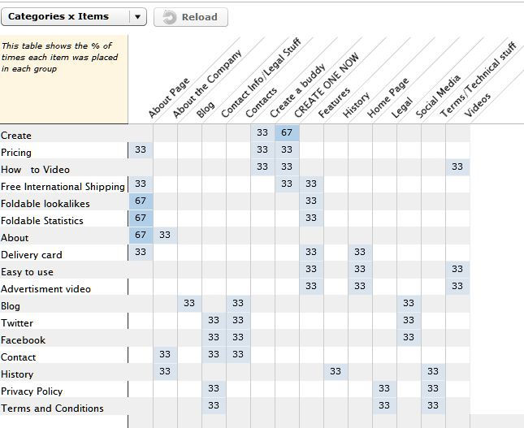

The process I went through for this card sorting experiment for Foldable.me was pretty simple. I looked through the site page by page, marking down on WebSort.net the titles and content that stuck out to me. I put the layout how I would have set it up and then asked my three roomates to do the same.
The largest difference between our choices were how we titled each page. Many of us used our own rendition of a similar themed title (although we likely picked similar titles because we were in the same room while doing the sorting experiment). If I were to do this again, I would pick more people to test and do a closed sort with one individual at a time to see where the content would fall in the predetermined groups. This would avoid the different content titles and provide more effective feedback.
